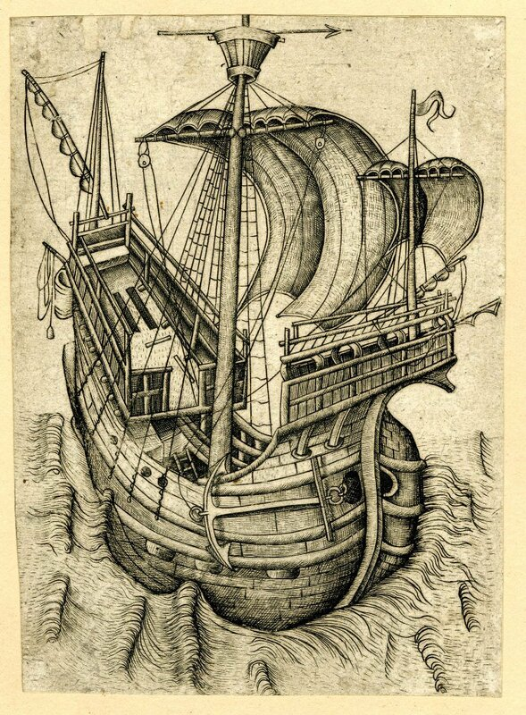

Парусный корабль. Гравюра Мастера W с ключом. 1465-1490
Мои уважаемые читатели проявили большое остроумие и выдумку в поисках истины, но правильного ответа найти не смогли. Я и сам узнал этот ответ совсем недавно, листая подшивки старых номеров журнала Mariner's Mirror. Начнем ответ с небольшого предисловия. Как бы «цыганочку с выходом».
Летом 1701 года на борту английского корабля Chichester состоялось заседание военного суда. Трибунал рассматривал дело некоего Генри Нобла, исполнявшего должность «shifter to the cook» на этом корабле. Он был признан виновным в злоупотреблении должностью, которое привело к сокращению порции мяса, выдаваемого морякам. Суд приговорил вышеупомянутого Нобла предстать перед экипажами всех кораблей флота с куском мяса, который он так неосмотрительно ополовинил, на шее, а затем от каждого корабля под флагом Англии, находящегося на рейде , ему полагалось принять по девять ударов кошкой-девятихвосткой (cat o' nine tails) и еще тринадцать ударов от его родного Chichester’а, к экипажу которого он принадлежал. Все это надлежало сделать под бой барабанов. Сколько было кораблей на рейде и как перенес экзекуцию бедяга Генри, нам не известно. Но мы узнали из этого рассказа о существовании на корабле некоей должности «shifter to the cook».
Известный уже нам Фалконер (говорят, был неплохим поэтом, но понесло его на флот, и закончил он свои дни в должности казначея на фрегате «Аврора», пропавшем без вести недалеко от мыса Доброй Надежды; было ему 37 лет – роковой возраст для поэтов), так вот, Фалконер в своем «Универсальном морском словаре» так пишет о shifter to the cook:
SHIFTER, (detrempeur, Fr.) a person appointed to assist the ship's cook, particularly in washing, steeping, and shifting the salt provisions.
Шифтер (фр. detrempeur) человек, назначенный в помощь корабельному коку, в частности, для промывки, вымачивания и перемещения солонины.
Это была одна из самых низших должностей в корабельной иерархии. Если вам довелось читать роман английского писателя Т. Смоллетта Приключения Перигрина Пикля, то вы могли заметить, что отставной коммодор Траньон, (грубиян, но хороший человек), прошел все ступени корабельной службы – от помощника кока до командира корабля ("served all offices on board from cook's shifter to the command of a vessel.")
Вроде бы обычный камбузный рабочий, помощник судового кока, но Вы отметьте, пожалуйста, что Фалконер особо выделяет только одну сферу приложения его сил – вымачивание солонины и связанные с этим действия.
Солонина в эпоху «деревянного» флота – это основной продукт питания на борту корабля. Чтобы продукт (мясо, рыба) не портился в агрессивных корабельных условиях, засолку его вели очень тщательно, то есть, соли не жалели. Кто бывал во Франции, замечал там, конечно, любимое лакомство французов – соленую треску morue. Как любитель всего рыбно-солено-вяленого, я как-то поддался соблазну и купил кусок такой трески к пиву. Увы, кроме вкуса соли других прелестей там не чувствовалось. Любая морская солонина требует длительной предварительной обработки для ее размягчения и освобождения от излишней соли. Поэтому при камбузе и числился вышеупомянутый «шифтер», который в нашем рассказе позарился на долю своих собратьев по общему котлу.
Пресная вода на корабле была большим дефицитом и использовать ее для вымачивания солонины было бы равносильно преступлению. Операция проводилась в морской воде. «Шифтер» помещал куски солонины в специальные емкости, которые назывались «steepe-tub». Вот такая емкость и есть наш гаджет из загадки предыдущего поста.
Зачем нужны были такие устройства, почему бы не вымачивать, просто привязав кусок солонины к тросу соответстующей длины и пустив его за борт в свободное плавание? В этом отношении любопытное изображение привел
 mitiaf в своем комментарии к предыдущему посту. Там наряду с steepe-tub’ом на тросе болтается засоленный окорок, который, видимо, приготовили для вымачивания. Но вот вам отрывок из описания второго путешествия Джеймса Уэлша в Бенин в 1590 году, напрочь отметающий обманчивую простоту предлагаемого способа:
mitiaf в своем комментарии к предыдущему посту. Там наряду с steepe-tub’ом на тросе болтается засоленный окорок, который, видимо, приготовили для вымачивания. Но вот вам отрывок из описания второго путешествия Джеймса Уэлша в Бенин в 1590 году, напрочь отметающий обманчивую простоту предлагаемого способа:
The 16th of October, in the lat. of 24° 9' N. we met a prodigious hollow sea, such as I had never seen before on this coast; and this day a monstrous great fish, which I think is called a gobarto put up his head to the steep-tubs where the cook was shifting the victuals, whom I thought the fish would have carried away.
16 октября, на широте 24° 9' N, мы столкнулись с очень сильным штормом, которого я никогда не видел прежде у этого побережья. В тот же день большая рыба ужасного вида, которая по-моему называется gobarto [видимо, акула - g._g.], просунула свою голову в steep-tubs, где отмачивал продукты кок, которого, я думаю, эта рыба могла утащить.
Таким образом, отмачивать солонину в открытом виде означало рисковать потерей продукта от атак прожорливых обитателей моря.
В дополнение к сказанному можно заметить, что наряду с отмеченным уже названием для нашего гаджета – steepe-tub – встречается еще одно – harness cask. Ясно, cask – это большая бочка, наподобие той, в которой проходит выдержку шотландский виски. Но причем тут harness – конская сбруя?
Острословы старого флота объясняли это двумя причинами: первая, что от лошади в эту бочку не попадает разве что только сбруя, и вторая, что помещаемое в нее мясо не отличалось по своим качествам от тех ремней, которые на эту сбрую шли.
До следующего рассказа о фламандской каракке.